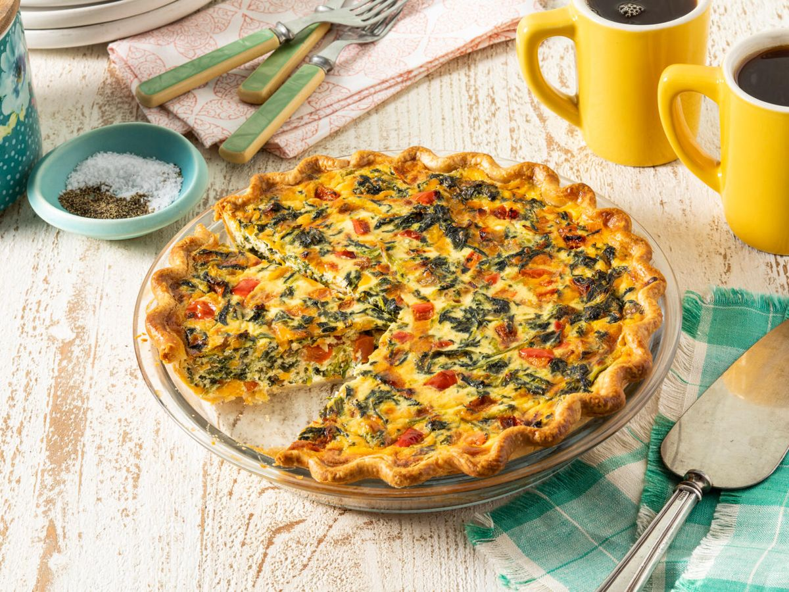

Quiche Recipe

Simple quiche recipe that can easily be customized
Ingredients
- 3 large eggs
- pie crust
- shredded cheese (swiss or cheddar)
- 1 1/2 cup half and half milk
- any combination of meat and/or vegetables
Directions
- Dice your vegetables and/or meats.
- Preheat the oven to 400 degrees.
- Whisk your eggs and milk together in a bowl. Add salt and pepper to taste.
- To your pie crust, add your cheese and fillings.
- Fill your pie with the egg mixture, making sure no cheese is sticking out.
- Season the top with paprika and put in the oven for about 40 minutes.
Similar Quiche Recipe